News
Things
Stuff
Junk
About
Menú con transiciones, opacidad e imágenes de background de:
farukat.es
flickr.com/photos/kurafire
See the photos I take
twitter.com/kurafire
Keep up with what I'm doing
vimeo.com/kurafire
Snippets of my life in 24
fps
linkedin.com/in/kurafire
For business connections
kurafire.tumblr.com
Personal sandbox
faruk.newsvine.com
Sometimes I write here
last.fm/user/kurafire
Explore my taste in music
